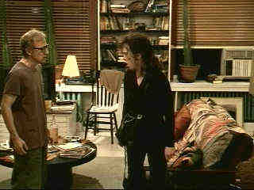

New Line/1997/96m/ANA,WS 1.85.FS1.33
The clever elements to the film don't take the sting out of this sixtyish actor's unrelenting lament about his sexual problems. Weaving between characters representing aspects of the main character's personality with different actors serving as his alter ego is a clever device, albeit somewhat confusing until you get the hang of Allen's angst alleviator.
 |
Allen angst. ©New Line |
As usual, Allen has recruited a host of
well-known actors to form an ensemble army in support of his vision. From Robin Williams
to Demi Moore to Kirstie Alley and Elisabeth Shue, the Allen magnet draws actors. The film
is well photographed with high level production values.
Deconstructing Harry is an excellent DVD. The anamorphic image
makes for a comfortable film-like viewing experience. Consistently sharp with accurate and
strong colors. The easy, breezy score sounds quite good. Small details in the Dolby
Digital 5:1 mastering make surrounds come alive subtly.
 ã1998 Stuart J. Kobak ,
all rights reserved.
ã1998 Stuart J. Kobak ,
all rights reserved.